CDR KG explorer: graph stack variants
Seven different ways to fit composition instances, templates and archetypes under the terminology pane of the TermViz split view. Recommendation: keep the three bands as the teaching default, add the template icicle next, and plan the treemap + icicle as the cohort mode. V6 (added 12 Nov) combines a locked DAG terminology pane, archetypes over templates, and cascaded patient treemaps. V7 makes every layer collapsible, with bundled or element-level links, and is now the target design (also in English). All prototypes are published on GitHub Pages.
Target design (V7)
Added 12 Nov 2026
V7 is now the target design for TermViz, to be built piece by piece in small PRs on top of PR #2. The terminology DAG stays on top (locked Sugiyama design, clickable +n clusters), with archetypes above templates in the middle and patient instances as cascaded treemaps at the bottom. Every layer can be collapsed and expanded, and links are bundled with counts or split into dotted element-level links. The phased roadmap is in the PRD (/workspace/cdr-catalyst/PRD-ips-kg-split-view.md).
- All prototypes (index)GitHub Pages
- This overview as a static page, with the real mockupsGitHub Pages
- V7 target design (interactive, Swedish terms)GitHub Pages
- V7 target design in EnglishGitHub Pages
What others do
No tool found shows the three levels (model, data, terminology hierarchy) together. Each tool covers one or two of them:
- Model viewers (CKM mind map, CKM template hierarchy, Archetype Designer, the oehrpy web-template explorer) draw one archetype or template as a radial or indented tree. Terminology appears only as code text in a binding table, and patient data is absent.
- Knowledge-graph work (OWL/SPARQL over archetyped data with SNOMED CT; openEHR on Neo4j; SNOMED property graphs with synthetic patients) puts everything in one graph but visualises it as a generic force layout (Neo4j Bloom), or not at all. That is the hairball PR #1 ran into.
- Archetype Inclusion Patterns (M. Koch, CatSalut) shows archetype reuse across many CKM templates as a network, which is the closest idea to an archetype-centric view (V3).
- D3 hierarchy layouts (zoomable treemap, icicle/partition, circle packing, and hierarchical edge bundling between two hierarchies) are well proven. The rolyhudson nested treemap with bundled connections is the nearest prior art for linking two hierarchies.
- Clinical timelines (LifeLines) show events over time but not the models behind them.
So the TermViz idea of separate, readable hierarchies joined only by the cross-pane edges is genuinely new. The variants differ in which hierarchy gets the most space, and in how the edges are tamed.
V1 · Three stacked bands (tree + DAG)
Full D3 mockup (example data). Source on the box: /workspace/cdr-catalyst/variants/png/v1-three-bands.png

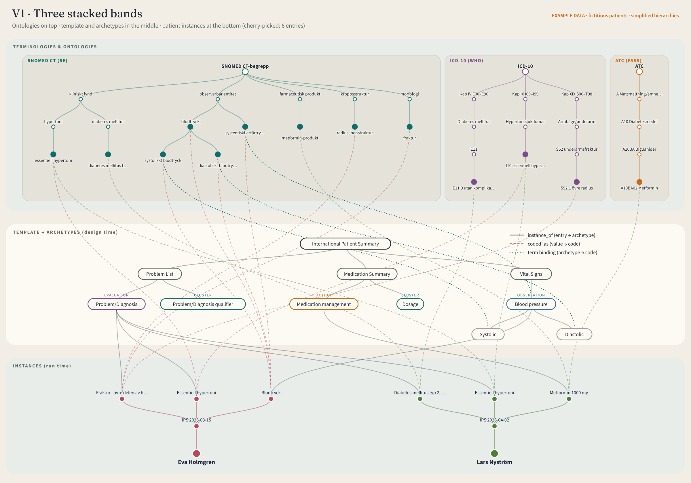
- Idea
- The PR #2 split view with one extra band. Ontologies sit on top (one root per code system), the IPS template and its archetypes in the middle with the root on top, and patient compositions at the bottom with the patient as the root at the very bottom, so the instance tree grows upward towards the archetypes and the codes.
- Panes / bands
- Top: SNOMED CT, ICD-10, ATC and NPU Sugiyama/tree forests, space shared by leaf count. Middle: the template tree (template → section → archetype → element), with concept-only labels. Bottom: patient → composition → entry, cherry-picked (here 6 entries).
- Links across levels
- Three edge kinds, each with its own style: instance_of (entry → archetype, solid grey), coded_as (value → code, dashed in the patient's colour) and term binding (archetype or element → code, dotted teal). The coded_as edges cross the middle band.
- Teaches well
- The classic openEHR two-level story plus terminology: design time versus run time, the fact that one archetype is used by both patients, and the fact that I10 is one shared node. Best for the 5-node pedagogical graph.
- Weaknesses
- coded_as edges have to pass through the template band, so they cross at about 15 nodes. The template has to be cherry-picked too, or it swamps the middle band.
- Many patients
- Poor beyond about 10 patients. Patients could collapse into one aggregated node per entry type, with the count as edge width.
- Effort on current code
- S–M. It extends PR #2 by adding a third pane, or by making the bottom pane two-rooted. It reuses the mapper link overlay.
- Open the V1 prototype (static mockup)GitHub Pages
V2 · Template icicle with instance heat (d3.partition)
Full D3 mockup (example data). Source on the box: /workspace/cdr-catalyst/variants/png/v2-template-icicle.png

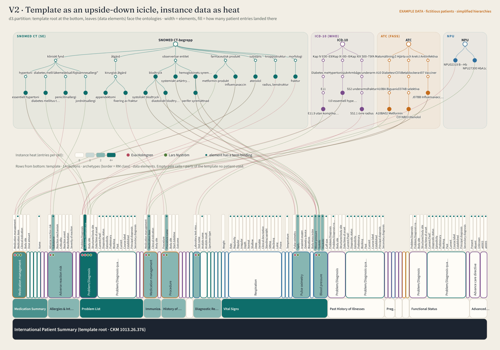
- Idea
- Draw the whole IPS template as an upside-down icicle (d3.partition), with the template root as a bar along the bottom and the data elements as the top row facing the ontologies. Cell width is the number of data elements, so space follows need. Fill shows how many patient entries landed in that cell (heat). Patient dots sit in the archetype cells, and their codes rise to the DAG.
- Panes / bands
- Top: the ontology forests, as now. Bottom: one icicle with 4 rows (template, 14 sections, archetypes with the border coloured by RM class, elements). A teal dot marks an element that has a term binding.
- Links across levels
- Rising soft curves from the patient dots or element cells to their codes. Design-time bindings start at the element row, and run-time codes start at the patient dots. Links never cross the template, because the template is below them.
- Teaches well
- What a template is: a big, mostly empty form. It shows which parts this data actually uses (Problem List and Vital Signs are hot; Pregnancy and Advance directives are empty), where the bindings are, and that sections reuse the same archetypes.
- Weaknesses
- Labels in thin cells must be rotated or hidden. Element order is the order in the operational template, not a clinical order. A DAG of archetype slots is forced into a tree.
- Many patients
- Very good. Heat is an aggregate, so 2 or 2,000 patients draw the same number of cells. Links can switch to a per-code count, with width showing the count.
- Effort on current code
- S. It is a new layout option in the bottom pane, d3.partition over the same d3.hierarchy the mapper already builds, plus a heat-count pass over the instances.
- Open the V2 prototype (static mockup)GitHub Pages
V3 · Archetype-centric hub (d3.pack)
Full D3 mockup (example data). Source on the box: /workspace/cdr-catalyst/variants/png/v3-archetype-hub.png

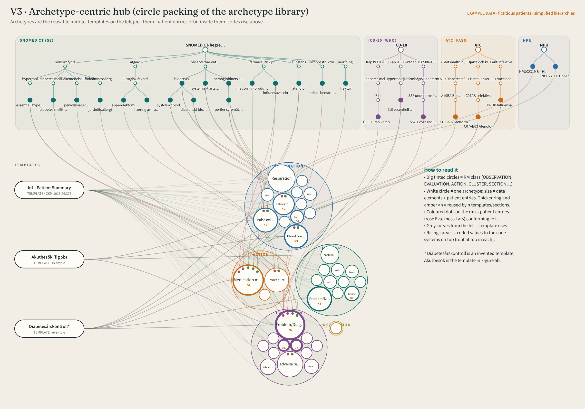
- Idea
- Make the archetype library the centre of gravity. Archetypes are packed circles (d3.pack) grouped by RM class. Templates sit as pills on the left and fan out to the archetypes they use. Patient entries are dots on the rim of the archetype they conform to, and codes rise to the top pane.
- Panes / bands
- Top: ontologies. Middle: the packed archetype library, sized by elements plus entries, with ring thickness and ×n showing reuse. Left: templates (IPS, Akutbesök from Figure 5b, and an invented Diabetesårskontroll).
- Links across levels
- Template → archetype (grey arcs from the left), entry → code (rising, in the patient's colour). Bindings can hang from the archetype circle.
- Teaches well
- Reuse and governance: the same problem_diagnosis archetype serves 5 template slots, so data stays queryable across templates (the AQL argument). It is a good opener for the CKM and governance part of CDR Catalyst.
- Weaknesses
- Hides the template's inner structure (sections and paths). Packing positions are not stable when data changes. Labels inside small circles get truncated.
- Many patients
- Good for many templates. Many patients become a count badge or a ring thickness per archetype rather than dots.
- Effort on current code
- M. It is a new view: d3.pack plus a template column, and it needs the template-to-archetype usage table, which the example JSON already has.
- Open the V3 prototype (static mockup)GitHub Pages
V4 · Patient timeline of composition tiles (d3.treemap tiles)
Full D3 mockup (example data). Source on the box: /workspace/cdr-catalyst/variants/png/v4-patient-timeline.png

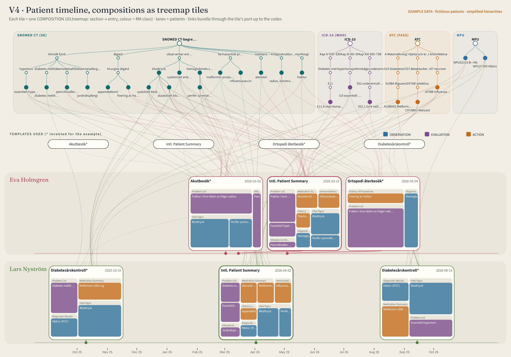
- Idea
- A LifeLines-style timeline. There is one lane per patient, and each COMPOSITION is a small treemap tile (section → entry, coloured by RM class) placed at its date and nudged sideways when tiles would overlap. A ribbon of templates in between shows what each tile was built from.
- Panes / bands
- Top: ontologies. Middle: the ribbon of templates used. Bottom: patient lanes along a time axis. Tiles that are not IPS are invented example encounters (Akutbesök, Ortopedi återbesök, Diabetesårskontroll).
- Links across levels
- Each tile has one port at its top. All its codes are bundled through that port (d3.curveBundle) and then fan out to the codes, so a tile reads as one cable. A dotted line runs from the tile to its template.
- Teaches well
- That an EHR is a stream of compositions, and that the same code (HbA1c, metformin) recurs over time. It is a natural place to explain versioning, the EHR and contribution, and why AQL queries across compositions.
- Weaknesses
- Archetypes are only implicit (as tile colours). Bundles merge at the top, so it is hard to see which entry went where unless you hover. Time can push tiles far apart.
- Many patients
- Medium. It works for 10–30 lanes with horizon-style mini tiles. A cohort view needs aggregation per time bucket.
- Effort on current code
- M–L. It needs a time axis, a tile treemap per composition and a dodge layout, and more than one composition per patient in the example data.
- Open the V4 prototype (static mockup)GitHub Pages
V5 · Zoomable nested treemap + ontology icicle, bundled edges (d3.treemap + d3.partition)
Full D3 mockup (example data). Source on the box: /workspace/cdr-catalyst/variants/png/v5-nested-treemap.png

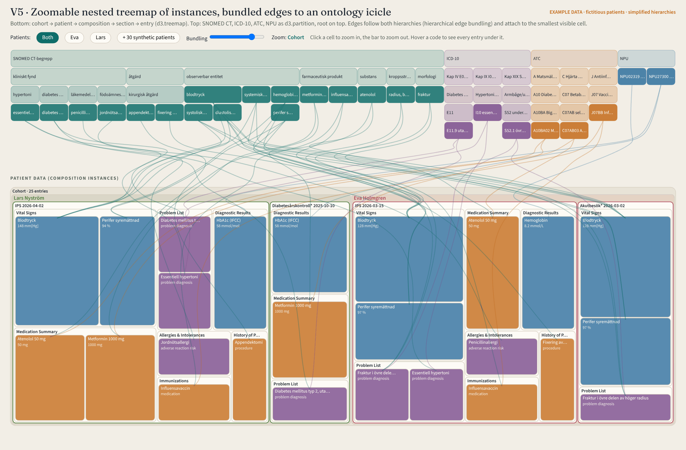
- Idea
- Both halves are space-filling. The bottom is a zoomable nested treemap of the cohort (cohort → patient → composition → section → entry), and the top is an icicle of the code systems with the root on top. Edges follow both hierarchies (hierarchical edge bundling) and attach to the smallest cell that is still visible, merging duplicates into thicker cables.
- Panes / bands
- Top: an ontology partition with one root per system; used codes are filled solid. Bottom: the treemap, coloured by RM class; a click zooms in, and the breadcrumb zooms out.
- Links across levels
- Bundled curves from entry to section, then to the patient, then to the code system's top level, then to the concept. The bundling slider goes from straight lines to tight cables. Hovering a concept highlights every entry coded at or below it (subsumption), and hovering an entry shows its full archetype id.
- Teaches well
- Subsumption queries as a picture (all clinical findings, all ATC C), cohort composition, and drilling from a cohort down to one value. This is the one built as an interactive demo.
- Weaknesses
- The design layer (template and archetypes) is only implicit, through section grouping and colour. Treemap cell positions change with the data. Dense cables need hover to be readable.
- Many patients
- Best of the five. Tested with 32 patients and 176 entries in the demo (+30 synthetic). Edges degrade gracefully by attaching to the parent cell.
- Effort on current code
- M. Both layouts are stock D3. The edge-attach rule and bundling are about 60 lines, and the demo is a ready prototype.

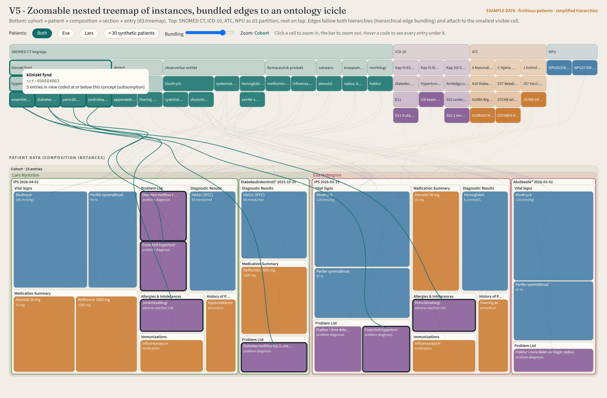

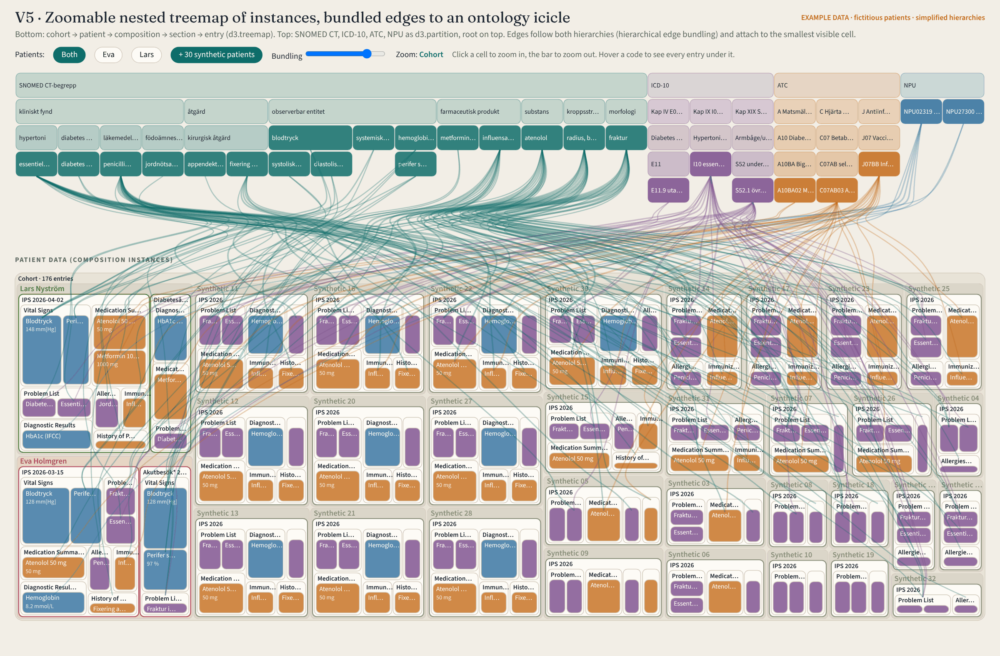
- Open the V5 prototype (interactive)GitHub Pages
V6 · Three-layer stack: ontology DAG, archetypes over templates, cascaded treemaps (d3-dag Sugiyama + cascaded treemap)
Full D3 mockup (example data). Source on the box: /workspace/cdr-catalyst/variants/png/v6-cascaded-stack.png

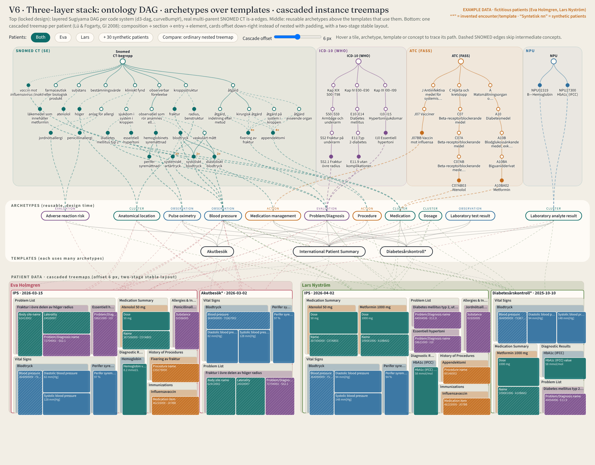
- Idea
- Erik's combination of the best parts. The top uses the locked terminology design: a layered Sugiyama DAG per code system (SNOMED CT, ICD-10, ATC, NPU), with soft curves and multi-parent concepts drawn as real DAG nodes. The middle is the V1 design layer flipped: reusable archetypes on top, the templates that use them at the bottom. The bottom is the V5 patient data, drawn as one cascaded treemap per patient (Lü & Fogarty 2008).
- Panes / bands
- Top: four side-by-side d3-dag layouts. The SNOMED CT part is the real is-a closure from the Nordic Ontoserver, cut down to used codes plus branch points (33 nodes, 41 edges). Amber “n↑” badges mark concepts with several parents, and dashed edges mark skipped intermediate concepts. Middle: 11 archetype pills with short clinical-concept labels (the full archetype id is in the tooltip), ordered by the codes they bind to, above 3 template pills. Bottom: Eva and Lars, each composition → section → entry → element as offset “stacked cards”.
- Links across levels
- Element → archetype (dashed, in the patient's colour, bundled through the entry and composition), archetype → concept (one edge per pair, width by count; dotted for a design-time-only binding), template → archetype (grey uses) and composition → template (dotted). Hovering an element, entry, archetype, template or concept lights up its whole path: tile → archetype → codes → all DAG ancestors up to the root.
- Teaches well
- All three openEHR levels at once without a hairball: archetypes are reused across templates, the same archetype appears in several patients, and a code such as 271649006 systolic blood pressure sits under two parents. Hovering a high-level concept (e.g. clinical finding) shows subsumption across both patients.
- Weaknesses
- The top band is wide. SNOMED needs the closure to be pruned, or it explodes (179 nodes for 18 codes). Many elements are derived from entry-level codes (hatched) because the example has few element instances. Cascade offsets cost a little space per level, so 4 levels is about the limit before labels are needed only on the top levels.
- Many patients
- Good. 30 synthetic patients appear as small cascaded treemaps. Below the patient level only tile names are shown, and the cascade carries the structure. The two-stage layout keeps tile positions stable when the filter or offset changes. The DAG and the archetype rows do not grow with the patient count.
- Effort on current code
- M–L. It reuses the d3-dag Sugiyama operators already in TermViz (layoutSugiyama). The cascaded two-stage treemap is about 120 lines. The SNOMED pruning step needs the terminology cache to store parents.

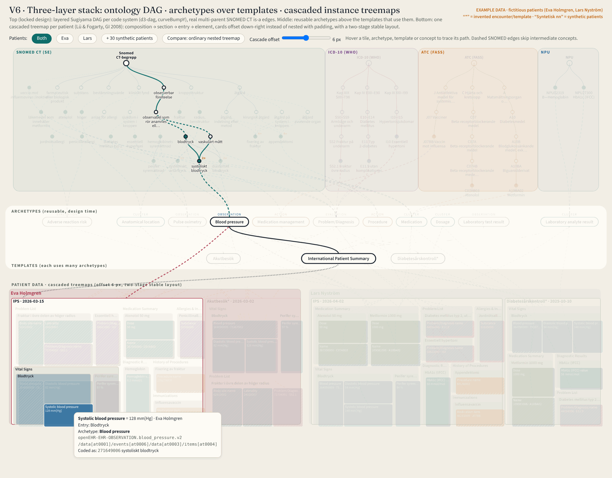

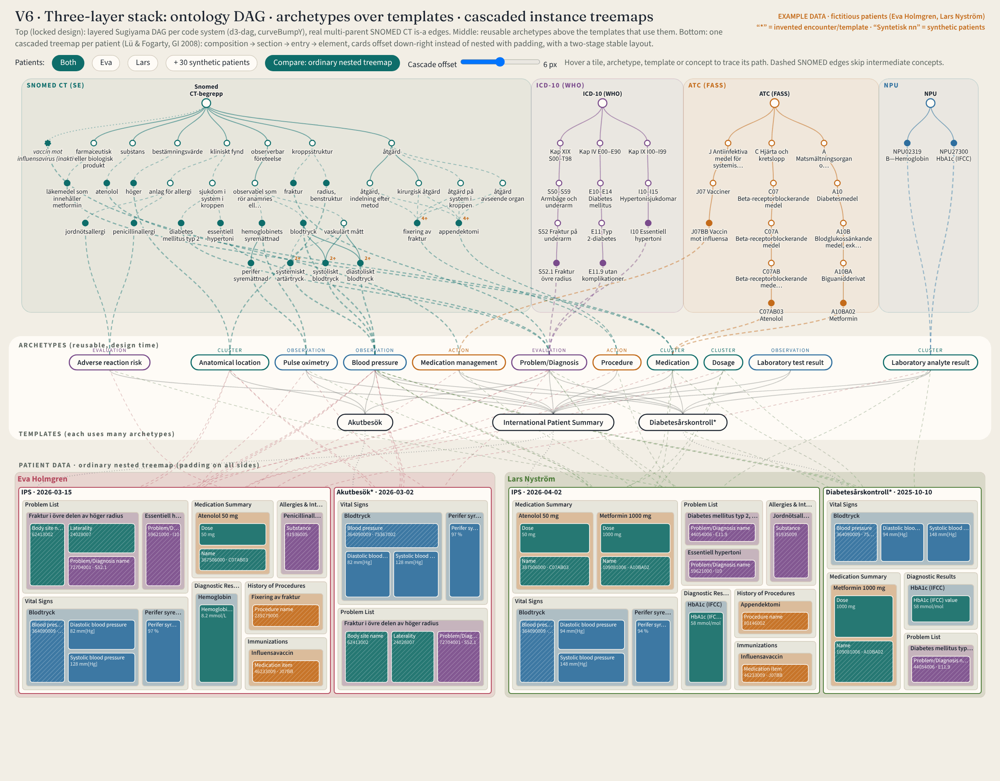
- Open the V6 prototype (interactive)GitHub Pages
V7 · Collapsible stack: clustered DAG, openable archetypes and templates, shrinkable instances (V6 + collapse/expand + link aggregation)
Full D3 mockup (example data). Source on the box: /workspace/cdr-catalyst/variants/png/v7-collapsible-stack.png

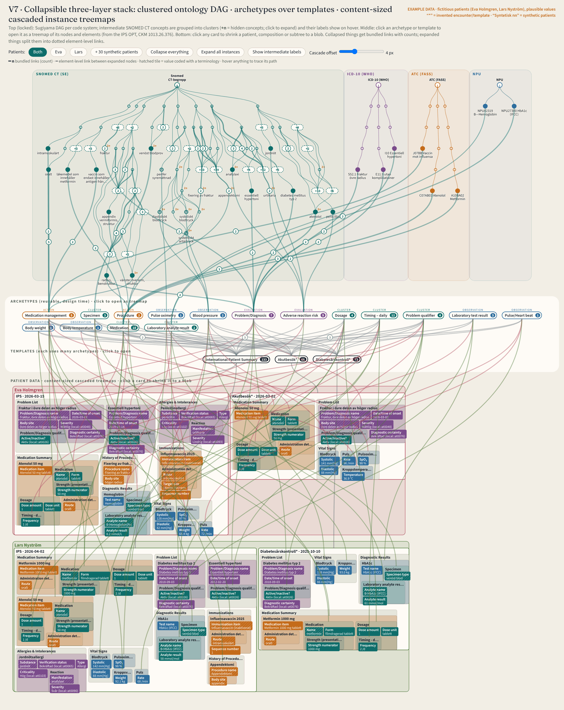
- Idea
- V6 with Erik's answers built in. Anything in any layer can be collapsed to one node or expanded into its parts. Links always attach to the nearest visible node: a collapsed end gets one solid link per target with a count, and once both ends are expanded the links split into dotted element-level links.
- Panes / bands
- Top: the locked Sugiyama DAG. The full SNOMED CT is-a closure from tx-nordics (252 concepts for 22 used codes) is reduced to 59 kept nodes plus 24 clusters, each drawn as a +n pill; a click expands a cluster. Intermediate labels are hidden and appear on hover or along a traced path. Middle: 16 reusable archetypes above 3 templates. A click opens any of them as a content-sized treemap built from the IPS OPT (CKM 1013.26.376): clusters, elements with value types, slots (↳) and term-binding dots. Bottom: Eva and Lars as content-sized cascaded treemaps on real IPS template paths; any card can be shrunk to a blob with an element count.
- Links across levels
- Five families (instance → archetype, instance → template, archetype → concept, template → archetype, DAG is-a). Each family is computed at the finest level and mapped to visible nodes. Examples: an instance element goes to an archetype element, then to a SNOMED concept; a template element goes to an archetype element. A blob gets bundled links such as Lars → Problem/Diagnosis with a count badge, and DAG edges into a collapsed cluster are bundled the same way.
- Teaches well
- Moving between levels of detail without losing the connections: from a whole patient as one blob, down to one value and the archetype element and concepts it is bound to. The synthetic cohort starts collapsed, which shows how bundling scales.
- Weaknesses
- The top band is tall, because the real closure is deep (about 12 layers). Some expanded clusters, such as the 32-concept anatomy chain, make it taller still. Content sizing leaves some whitespace where sibling cards have very different heights. With everything expanded there are hundreds of dotted links, so it relies on hover.
- Many patients
- Good. 30 synthetic patients start as blobs with bundled counts (538 drawn links, 127 of them bundles with a count), and the model and DAG layers do not grow with the number of patients.
- Effort on current code
- L. The aggregation rule (map each fine link to the visible node, then group) is small and generic. Content-sized packing, the cluster computation and the OPT parsing are the bigger parts, and the OPT parser is reusable.

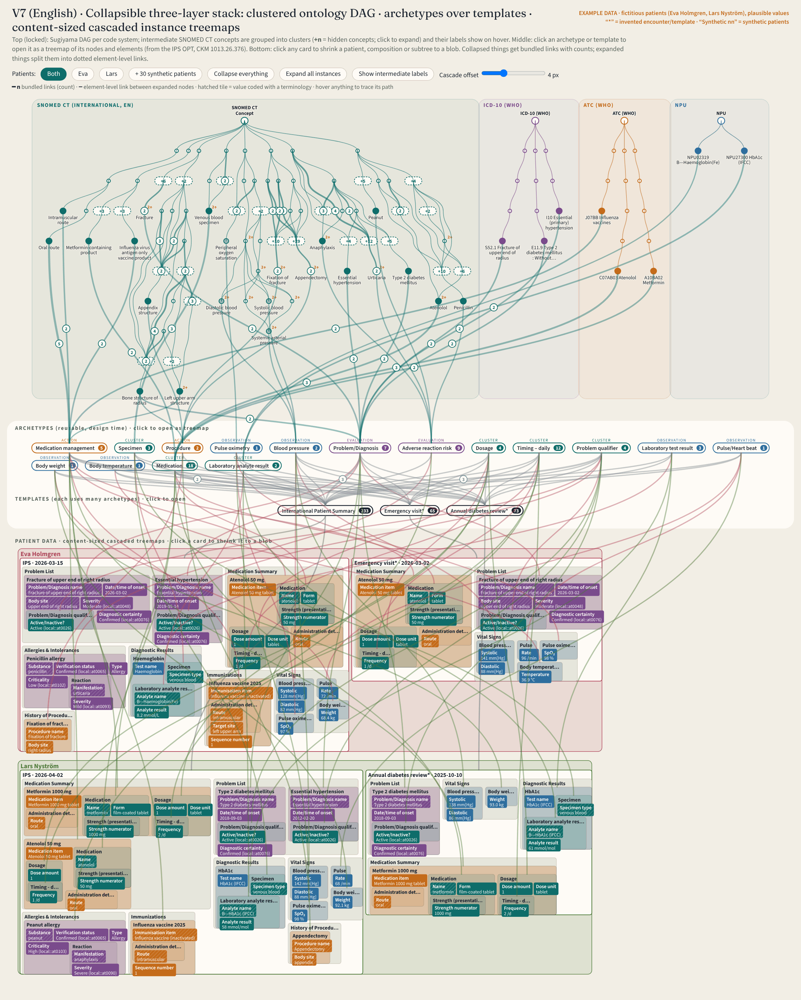

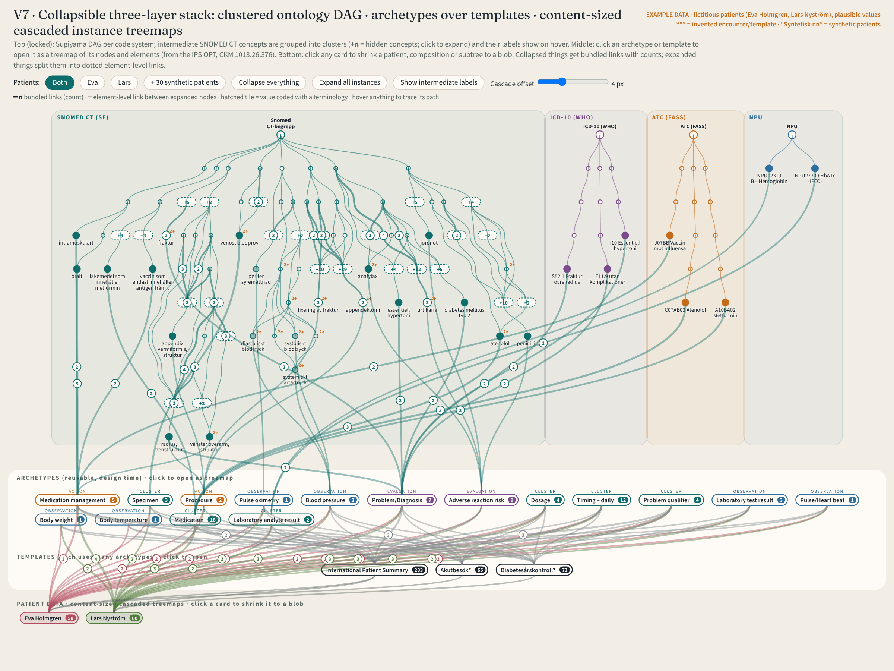

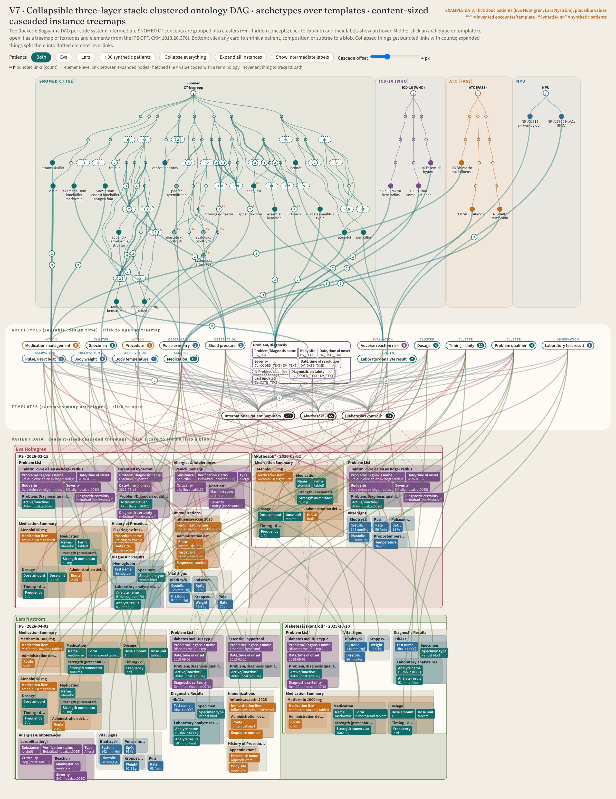

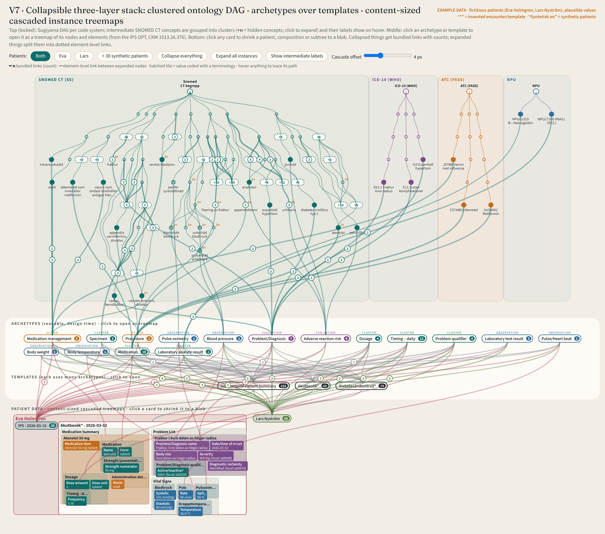

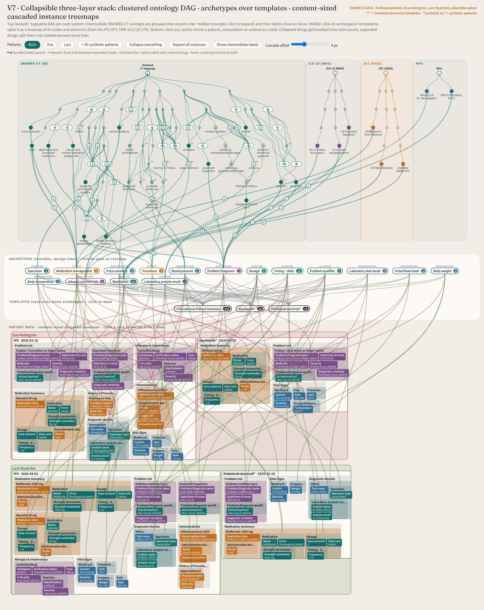

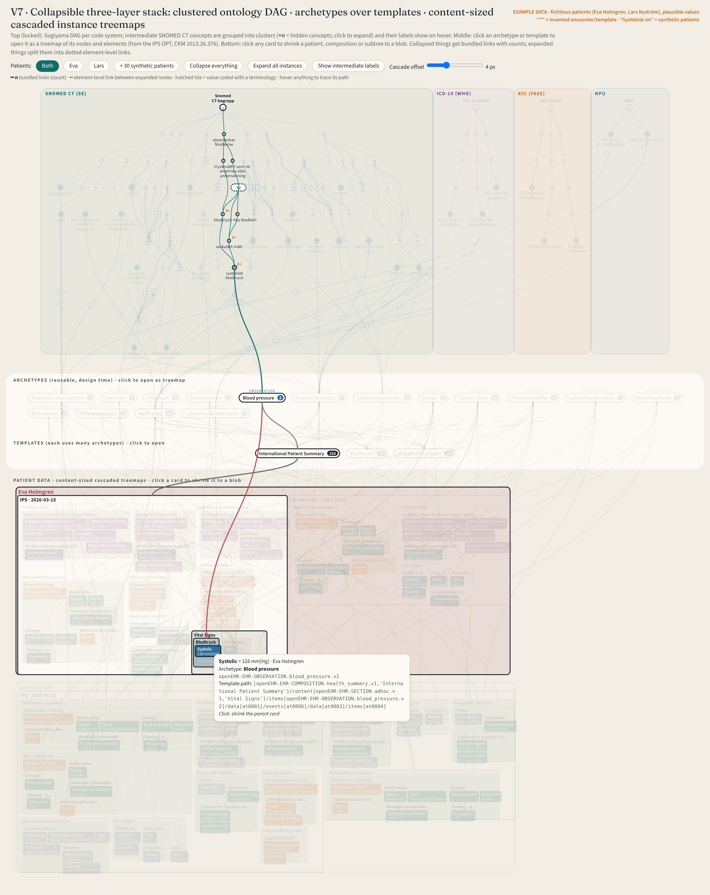

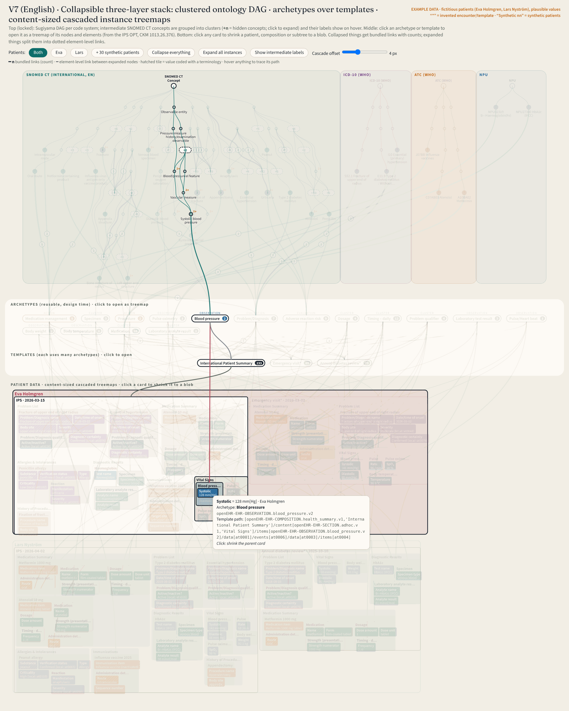
- Open the V7 prototype (interactive)GitHub Pages
- Open V7 in English (all labels in English)GitHub Pages
V6 note: cascaded vs ordinary nested treemaps
After Lü & Fogarty, Graphics Interface 2008
- Nested treemap (V5): every parent frames its children, with padding on all four sides. Each level costs about 2p in width and height, and deep levels shrink fast or disappear.
- Cascaded treemap (V6): each parent is shrunk to its children's bounding box and moved up-left by a small offset p, so the children overhang it down-right like a stack of cards. Each level costs only p, siblings get spacing for free, and depth reads as a shadow even with 2 px offsets and 1 px borders.
- Section and entry headers can be left out and the cascade still shows the deeper structure. In the synthetic cohort only the patient and tile names are labelled.
- Two-stage layout: stage 1 fixes each split's direction and child grouping at a reference size, and stage 2 gives each side room for offsets and labels plus its share of the rest. Nodes never go missing, and positions stay put when the offset, filter or size changes. The demo has a toggle to compare with an ordinary nested treemap.
- Interactive demo
- /workspace/cdr-catalyst/variants/v6-cascaded-stack-demo.html (single file, offline)
- Controls
- Both / Eva / Lars · + 30 synthetic patients · Compare: ordinary nested treemap · cascade offset 2–10 px · hover anything
- Example data
- Eva Holmgren and Lars Nyström are fictitious. The Akutbesök* and Diabetesårskontroll* encounters and the Diabetesårskontroll* template are invented; “Syntetisk nn” patients are synthetic. Eva's fracture is ICD-10 S52.1.
V7 note: collapse, expand and link aggregation
Answers to the V6 open questions, and the new interactions
- Q1: SNOMED CT intermediate concepts are clustered by the set of kept concepts below them. A dashed +n pill stands for n hidden concepts, and a click expands it. Each cluster has its own stable colour: the dashed pill, the dotted rings around its members once expanded, a faint hull behind them and the edges inside the group all use it. Multi-parent concepts carry no extra badge, since the graph shows them. Labels of intermediate nodes are hidden by default and appear on hover or along a hovered path.
- Q2: the instances now hold realistic element-level example values on real IPS template paths, parsed from the OPT. Tiles are sized to their text, with no weights. Cards are packed with an order-preserving skyline packer, and the patient, composition and section levels may also try a tighter order.
- Q3: the influenza vaccine code 46233009 was our own proposal, not dictated by IPS (see the callout below). It was replaced by 1181000221105, which is active.
- Link rule: every link is defined at the finest level (for example, instance element → archetype element) and mapped to the nearest visible node on each side. A collapsed end gives a solid link with a count; when both ends are open, the links become dotted element-level links. The same rule applies in all three layers, including the DAG clusters.
- Interactive demo
- /workspace/cdr-catalyst/variants/v7-collapsible-stack-demo.html (single file, offline)
- Clicks
- Card → shrink to a blob · blob → expand · archetype or template pill → open as a treemap (− closes it) · +n cluster → expand · expanded member → collapse its cluster
- Buttons
- Both / Eva / Lars · + 30 synthetic patients (start collapsed) · Collapse everything · Expand all instances · Show intermediate labels · cascade offset 2–8 px
- Example data
- Fictitious patients with plausible values (e.g. Eva BP 128/82, Hb 8.2 mmol/L; Lars HbA1c 58 mmol/mol, metformin 1000 mg 2×/d). * = invented encounter or template; “Syntetisk nn” = synthetic. Eva's fracture stays ICD-10 S52.1.
Comparison
Effort: S is about one agent PR, M two or three, L more.
| Main layout | Template detail | Archetype reuse | Time | Subsumption | Many patients | Edge clutter | Effort | |
|---|---|---|---|---|---|---|---|---|
| V1 Three bands | trees + DAG | High (picked) | Medium | No | Medium | Poor | High | S–M |
| V2 Template icicle | d3.partition | Full template | Medium | No | Medium | Very good (heat) | Low | S |
| V3 Archetype hub | d3.pack | Low | High | No | Medium | Good (badges) | Medium | M |
| V4 Timeline tiles | d3.treemap per composition | Low | Low | Yes | Low | Medium | Medium (bundled) | M–L |
| V5 Treemap + icicle | d3.treemap + d3.partition | Medium (sections) | Low | Partly | High | Best | Low–medium (bundled) | M |
| V6 DAG + archetypes/templates + cascaded treemaps | d3-dag Sugiyama + cascaded treemap | Medium (archetype level) | High | Partly (dates) | High (real DAG) | Good | Medium (bundled + hover) | M–L |
| V7 Collapsible stack | clustered Sugiyama + content-sized cascades | Full, on demand (OPT) | High | Partly (dates) | High (full closure, clustered) | Good (blobs + counts) | Adaptive (bundled ↔ dotted) | L |
Recommendation
- Keep V1 as the default teaching view. It is what PR #2 is heading towards, and it fits the ~5 cherry-picked nodes story best. It also answers PRD open question 1 in favour of a separate instance band, with the patient root at the bottom.
- Add V2 next, as a layout switch in the bottom pane (Tree | Icicle). It is the cheapest step (the same d3.hierarchy, laid out with d3.partition), it shows the whole IPS template at once with space by need, and the heat answers "which parts does real data use?". It also makes cherry-picking easy, because you click hot cells to pick them. The mapper already rotates the tree four ways, and the icicle can do the same: root at the bottom by default, so the leaves face the ontologies.
- Build V5 later as the cohort mode. It is the only variant that scales to many patients and makes SNOMED CT subsumption visible. The demo shows the interaction, and its ontology icicle could replace the Sugiyama DAG when the top pane gets crowded.
- V3 and V4 make good single slides for the CDR Catalyst narrative (reuse and governance; the EHR as a stream of compositions), but they need not be live modes yet.
- Added 12 Nov: V6 is a candidate target layout that brings V1's design layer and V5's patient data together under the locked DAG terminology pane. The open questions are listed under Files on the box.
- Decided 12 Nov: V7 is the target design. It is to be built piece by piece as small, separately previewable PRs on top of PR #2 (see the roadmap in the PRD). V1 stays the starting point, because V7 with everything collapsed and few patients is close to V1.
Files on the box
- Interactive demo (self-contained, offline, d3 inlined): /workspace/cdr-catalyst/variants/v5-nested-treemap-demo.html
- Mockup PNGs: /workspace/cdr-catalyst/variants/png/v1-three-bands.png, v2-template-icicle.png, v3-archetype-hub.png, v4-patient-timeline.png, v5-nested-treemap.png
- Demo interaction screenshots: png/v5-demo-hover-clinical-finding.png, png/v5-demo-synthetic-cohort.png, png/v5-demo-zoom-eva-ips.png
- Mockup sources: v1-three-bands.html … v4-patient-timeline.html, lib/shared.js, lib/ips-data.json (generated from ips-kg/examples/international-patient-summary/ips-kg-example.json)
- V6 demo (single file, offline, d3 + d3-dag inlined): /workspace/cdr-catalyst/variants/v6-cascaded-stack-demo.html
- V6 PNGs: png/v6-cascaded-stack.png, v6-demo-hover-eva-systolic.png, v6-demo-hover-eva-fracture.png, v6-demo-hover-clinical-finding.png, v6-demo-nested-comparison.png, v6-demo-eva-only-stable.png, v6-demo-synthetic-cohort.png
- V6 build: build/fetch-sct.py, fetch-sv.py, prune.py (SNOMED closure from tx-nordics, 12 Nov 2026), make-v6-data.py → lib/v6-data.js, v6-src.html + inline-v6.py, snap6.mjs
- V7 demo (single file, offline): /workspace/cdr-catalyst/variants/v7-collapsible-stack-demo.html
- V7 PNGs: png/v7-collapsible-stack.png, v7-demo-all-collapsed.png, v7-demo-archetype-expanded.png, v7-demo-archetype-expanded-hover.png, v7-demo-instance-shrunk.png, v7-demo-instance-shrunk-hover.png, v7-demo-dag-cluster-expanded.png, v7-demo-hover-eva-systolic.png, v7-demo-template-expanded.png, v7-demo-synthetic-collapsed.png
- V7 English: v7-collapsible-stack-demo-en.html (SNOMED CT International English preferred terms via build7/sct7-en.py, WHO ATC, English NPU and ICD-10, English IPS terms, translated example values); built by make-v7-data-en.py → lib/v7-data-en.js and inline-v7.py; screenshots by snap7-en.mjs (png/v7en-*.png)
- Published copies: https://erik-sundvalls-bots.github.io/TermViz/prototyping/ (TermViz master public/prototyping/ and the gh-pages branch prototyping/)
- V7 build: build7/ips.opt (IPS OPT via the openEHR assistant connector) → opt-parse.py; sct7.py (SNOMED CT closure + clusters, tx-nordics SE edition); make-v7-data.py → lib/v7-data.js; v7-src.html + inline-v7.py; snap7.mjs
Sources
- CKM mind map module (Freemind viewer) – openEHR Discourse
- CKM deep dive: tabbed, mind map and hierarchy views (Medblocks)
- Template authoring tools incl. Archetype Designer and Archetype Inclusion Patterns
- oehrpy Template Explorer (Web Template → FLAT paths)
- EHRbase docs: openEHR data models
- openEHR Archetype Technology Overview (RM, archetypes, templates)
- Dentler et al. 2013: archetyped patient data in OWL + SNOMED CT, SPARQL
- Graph databases for openEHR clinical repositories (Neo4j)
- Berges et al.: binding SNOMED CT terms to archetype elements
- SNOMED CT property graph with synthetic patients (Neo4j Bloom)
- SNOMED International and openEHR collaboration
- D3 zoomable treemap
- D3 zoomable icicle
- D3 hierarchical edge bundling
- Nested treemap with bundled connections (rolyhudson)
- LifeLines: visualising patient records (Plaisant et al. 1998)
- Lü & Fogarty 2008: Cascaded treemaps (Graphics Interface)
- d3-dag: Sugiyama layouts for DAGs
- Nordic Ontoserver (SNOMED CT $lookup used for the V6 DAG)
- CKM: International Patient Summary template 1013.26.376 (OPT used in V7)
Static export of the design overview page, 12 Nov 2026.
Design prototypes for the TermViz CDR knowledge-graph explorer (CDR Catalyst, Karolinska). All data is example data: Eva Holmgren and Lars Nyström are fictitious patients, encounters and the template marked * are invented, and “Syntetisk nn” / “Synthetic nn” patients are synthetic. No real patient data. Published 12 Nov 2026.